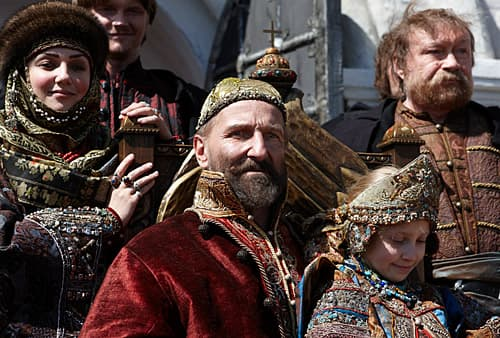
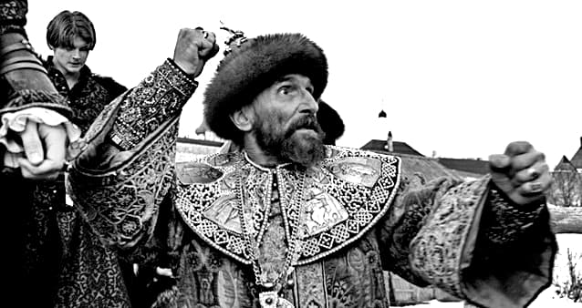
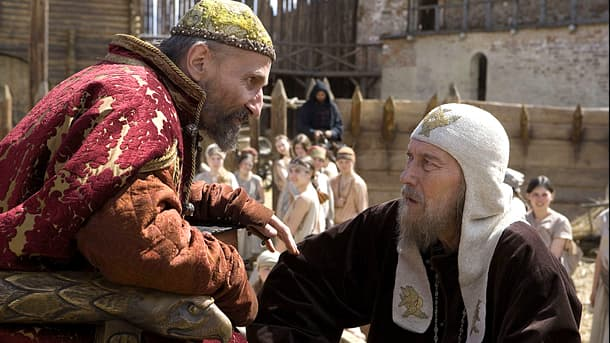
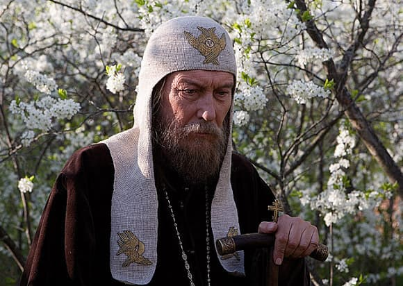
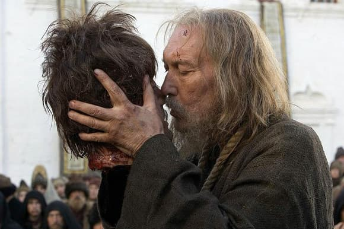
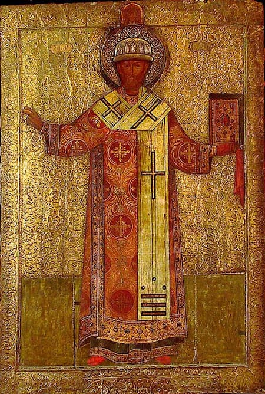

În rândurile de mai jos voi stărui puțin asupra noului eveniment cultural din tandemul Lunghin — Mamonov, mult controversatul film „Țarul”, avându-i ca figură centrală pe cel ce a fost cunoscut în istorie ca Ivan cel Groaznic — interpretat absolut magistral, de la fel de mult controversatul actor Piotr Mamonov — și viața Mitropolitului Filip, prietenul din copilărie al Țarului.
Nici nu a apărut bine în România în circuitul binecunoscut al internetului și filmul acesta — chiar mai mult decât „Ostrovul” — a produs o adevărată furtună intelectuală și… de ce să nu recunoaștem, intelectualitatea română a secolului XI se pricepe de minune la așa ceva.
Polemici istorice, exegeze cinefile, acuzații politice, învinuiri adevărate și false, ba chiar și trucaje fotografice, toate ingredientele acestea au izbucnit deodată în lumea virtuală a internetului românesc în urma vizionării acestui film. S-au spus cuvinte grele, s-au dat verdicte istorice actuale, care contravin istoriei și sutelor de ani care s-au așternut asupra evenimentelor dramatice din viața primului Țar rus. Așa că am luat hotărârea să nu vorbesc prea mult în numele meu, ci am selectat mai multe pagini semnificative din materialele puse la dispoziție de istorie și chiar de pe internet.
Dar înainte de a da cuvântul celor competenți în religie și istorie, voi încerca măcar timid, în urma experienței de douăzeci de ani pe platourile de filmare și scenelor teatrului, să-mi exprim admirația încă o dată față de talentul școlii ruse de film și a mai noului regizor Pavel Lunghin.
Ca și la înaintașul său Tarkovski, capodopera acestuia, „Andrei Rubliov”, filmul „Țarul”, al lui Pavel Lunghin adâncește o durere existentă în sufletul creștin universal — adică în ortodoxie — prezentând una din perioadele cele mai tulburi din istoria creștină a pământului rusesc, când misticul, dragostea și jertfa pentru aproapele și pentru Hristos, sunt împletite cu nebunia, lăcomia, mândria, desfrâul și crima. De-a lungul timpului, toată arta a fost preocupată de a scoate în valoare figura stranie a primului Țar rus, precum și a rudelor acestora, precum Țarul Boris Godunov.
„Monstru sângeros pentru unii, justițiar și unificator de pământuri pentru alții, el înaintează spre tribunalul posterității într-o ceață străbătută de raze” — scrie în cartea sa „Ivan cel Groaznic” scriitorul de origine rusă născut la Moscova și stabilit în Franța secolului XX, Henry Troyat.

De la cronicarii de epocă istorici, scriitori cu mari valențe literare, cum a fost Henry Troyat, la pictori renascentiști sau moderni trecând apoi prin teatru cu binecunoscuta piesă a lui Pușkin — „Boris Godunov” — apoi prin binecunoscuta operă modernă a lui Mussorsky cu același nume, ajungând pe aceeași temă la mai recenta ecranizare în 1986 a lui Serghei Bondarchuk — „Boris Godunov” — iată numai câteva din operele ce au frământat mințile și sufletele creatorilor de artă din acești 500 de ani, scurși de la acele încercări grele ale Rusiei țariste. Și exemplele ar putea umple încă trei-patru pagini de carte. Dar am să mă opresc aici pentru că în toate aceste exemple, un lucru este cât se poate de clar și limpede: figura centrală a tuturor acestor opere a fost Ivan cel Groaznic și următorul său la tron — de altfel cumnat și socru în același timp — Boris Godunov. Subliniez acest fapt, tocmai pentru că polemicile și disputele în jurul filmului regizat de Pavel Lunghin s-au învârtit în jurul ideii de cât de ortodox este acest film.

Chiar dacă afirmațiile mele vor stârni noi polemici, mărturisesc așa cum am făcut-o și pentru filmul „Ostrov”, că „Ivan cel Groaznic” regizat de Pavel Lunghin este un film sută la sută ortodox, încadrându-l alături de „Andrei Rubliov” al lui Tarkovski sau mai recentele filme ale lui Abulatze în „modalități de mărturisire creștină ale secolului XXI”. Fac aceste afirmații bazându-mă pe genialitatea regizorului de a scoate în prim plan, exact ceea ce nu au făcut ceilalți creatori de artă — prezentarea Mitropolitului Filip — cel ce a fost prezent în istorie la început ca prietenul din copilărie al Țarului Ivan și mai târziu ca martir al acestuia.
Voi lăsa mai întâi textul Sinaxarului de la Mânăstirea Radonej să vorbească despre viața Mitropolitului și apoi vom încerca să comentăm faptele istorice ce cuprind acțiuni atât ale Țarului cât și ale Mitropolitului:
Sfântul Ierarh Filip se trăgea din vița boierilor Kolacev, familie vestită prin marile merite ale strămoșilor și prin curata evlavie. Boierul Stepan Mihailovici se bucurase de dragostea și prețuirea marelui cneaz Vasilie, ca un vrednic și viteaz conducător de oaste. Soția sa, Varvara, era o femeie foarte pioasa, ajutătoare fără preget a săracilor. Ultimii ani din viață și i-a petrecut în călugărie, numindu-se Varsanufia. Fiul lor, Teodor — numele de botez al lui Filip, a primit o educație superioară, în spiritul acelor vremuri. A învățat să scrie și să citească după cărțile bisericești, a căpătat și a păstrat până la sfârșitul vieții dragostea de cărțile bisericești ziditoare.
Marele cneaz Vasilie l-a luat pe tânărul Teodor Kolacev la curte, iar fiul său, tânărul Ioan, l-a îndrăgit. Faptul că Teodor l-a cunoscut din tinerețe pe cel ce avea să devină Țarul Ivan cel Groaznic avea să se afle, mai târziu la obârșia tuturor necazurilor lui Filip. În timpul crizelor care aveau să-i răvășească sufletul, Ivan avea să-și aducă aminte de prietenul său iubit de odinioară care devenise călugăr, retras la Mănăstirea Solovet. Spera că dacă ar reînnoda această prietenie, aflând de la el cuvânt ziditor și de mângâiere, ar putea să se împace cu sine, să-și liniștească cugetul, bântuit de atâtea furtuni. Cu această speranță îl va fi chemat din „pustie” pentru a împodobi și înnobila cu prezența sa scaunul de întâistătător al Bisericii, dar și capitala imperiului. Mai târziu, tot el îl va împodobi cu cununa muceniciei.
Viața la curte, pe vremea copilăriei lui Ivan era amenințată în același timp din două părți. Pericolul venea, pe de o parte dinspre boierii complotiști, iar pe de alta, de la desfrâul care domnea acolo și care amenința sufletele. Tragica soartă a rudelor lui Teodor nu putea să nu aibă consecințe asupra sufletului tânărului, care și-a dat seama de câte păcate este plină viața lumii și cât de pustie este. Într-o duminică — era 5 iunie 1587 — s-a nimerit să audă la Liturghie cuvintele Mântuitorului: „Nimeni nu poate sluji la doi domni.” Dumnezeieștile cuvinte l-au impresionat într-o asemenea măsură, încât s-a hotărât să se despartă pentru totdeauna de „lume”. Avea atunci 30 de ani.
Rugându-se cu mult sârg sfinților făcători de minuni de la Moscova, Teodor a părăsit orașul în taină, îmbrăcat în straie sărăcăcioase. Ajungând lângă lacul Onega a rămas o vreme acolo, în satul Hij ca să i se piardă urma. S-a oprit la casa unui țăran și pentru a nu-i fi aceluia o povară i-a propus să-i muncească în schimb, pentru găzduire. Țăranul l-a trimis să pască vitele, iar fiul de boier, viitorul întâistătător al Bisericii rusești, a primit cu bucurie smerita îndeletnicire de văcar. Apoi, tot neștiut de nimeni avea să ajungă la mănăstirea de la Solovet, luându-și asupra munci dintre cele mai grele.
Fiul unor părinți cu faimă, care se bucurau de un imens prestigiu, tăia și căra lemne, săpa pământul în grădină, lucra la moară, se ducea la pescuit. Astfel pus la încercare timp de un an și jumătate, Teodor Kolacev avea să fie călugărit la cererea sa, primind numele Filip, și încredințat supravegherii experimentatului Bătrân Iona Samin, prietenul și confidentul Preacuviosului Alexandru Svirski. Egumenul Alexie l-a trimis pe tânărul monah la fierărie, Filip deprinzând repede lucrul acolo, bătând fierul cu un baros uriaș. Apoi l-a trimis să lucreze la pitărie. Pretutindeni Filip s-a arătat ascultător ca nimeni altul. În ciuda muncii grele la care era supus, nu neglija niciodată rugăciunea la biserică, ajungând acolo primul și plecând ultimul.
Smeritul nevoitor avea să se învrednicească de un semn de sus. În biserica mănăstirii de la Solovet poate fi văzută până astăzi o icoană a Maicii Domnului numită „a pâinii”, cea la care se ruga și de la care primea mângâiere pitarul Filip. Frații îl lăudau pe osârduitorul călugăr, care avea să părăsească pentru o vreme mănăstirea, nevoindu-se în singurătate, într-un loc retras.
După nouă ani de nevoințe duhovnicești, smeritul „poslusnic” a fost ridicat la rangul de egumen (în 1548), ales într-un singur glas de obștea fraților, vrednicie de la care chinovia Preacuvioșilor Zosima și Savatie avea să se aleagă cu multe foloase. Sfântul Filip a fost așezat în scaunul de egumen împotriva voinței sale, dar s-a apucat îndată de treabă, îndeplinindu-și obligațiile cu dragoste și râvnă. A condus mănăstirea timp de 18 ani, făcând pentru ea atât de multe lucruri, încât a fost considerat, pe bună dreptate, al doilea ctitor al ei, după Făcătorii de minuni Zosima si Savatie. În anii 1550 și 1551 a călătorit la Moscova și Novgorod, în chestiuni legate de viața mănăstirii, întorcându-se cu bogate daruri împărătești și cu gramate de apreciere. Multă vreme mănăstirea n-a putut să-și revină după un incendiu din 1538.
Egumenul Alexie, predecesorul lui Filip a izbutit, într-o oarecare măsură să o aducă la vechea ei stare, fără să o fi făcut întru-totul. Filip a construit numeroase spații de locuit și anexe gospodărești, a extins și îmbunătățit cariera de extragere a sării, a cărei exploatare aducea cea mai mare parte din veniturile mănăstirii. Se aprovizionau cu sare extrasă de aici orașele Holmogori, Ustiug, Vologda, Totma. În timpul egumeniei lui s-a amenajat o moară, cincizeci și două de lacuri au fost legate între ele prin canale, obținându-se astfel desecarea unor lacuri mlăștinoase, pe locul cărora au început să apară pajiști cu fânețe. S-au deschis noi drumuri printre bălți si hățișuri.
La o distanță de zece verste de mănăstire, pe o insula, a fost amenajată o crescătorie de reni, ale căror blăni și piei luau drumul târgurilor. Egumenul Filip a instituit o seamă de reguli pentru viața de toate zilele a fraților, ce haine și ce încălțăminte să aibă fiecare, prin aceasta punând capăt încercării unora de a se purta după bunul lor plac. Pentru călugării bătrâni și pentru bolnavi a făcut o bolniță mănăstirească. Sub ocârmuirea sa, viața duhovnicească la Solovet a cunoscut o mare înflorire. Atunci s-au nevoit acolo Preacuvioșii Ioan și Longhin, Vasian și Iona, preaslăviți de Domnul. Pentru a trezi în frați duhul marilor întemeietori ai locașului a căutat icoana Maicii Domnului — „Odighitria”, care fusese adusă pe insulă de Preacuviosul Savatie, crucea de piatră aflată atunci în fața chiliei sale, psaltirea și odăjdiile de slujbă ale preacuvioșilor de odinioară. A dat dispoziție să fie scrise amintirile, păstrate prin viu grai, despre minunile preacuvioșilor părinți din trecut.
Pe vremea sa a fost construită biserica trapezei, cu hramul „Adormirea Maicii Domnului”, lungă de 84 de stânjeni, precum și o clopotniță, sfințită în anul 1557. A făcut rost de unelte cu care puteau fi realizate legături durabile și sigure atât pentru construcțiile de piatră cât și pentru cele din lemn ale mănăstirii. A înzestrat mănăstirea cu trei clopote noi. În 1558 a pus piatra de temelie a unei biserici mari cu hramul „Schimbarea la Față”, lucrând el însuși în rând cu zidarii. În partea de nord a bisericii și-a făcut sieși o criptă, alături de cea a îndrumătorului său, Starețul Iona. Din când în când se retrăgea la liniște, la vreo două verste de mănăstire; locul unde se nevoia se numește până astăzi „pustia lui Filip”. Pentru iubitorii de singurătate a întemeiat un schit, pe insula Zaiatkoe; în alte locuri au fost construite chilii, pentru cei dornici să se retragă o vreme în ele.
Acesta era cel pe care la anul 1566 Ivan cel Groaznic l-a chemat la Moscova pentru a fi așezat pe scaunul de mitropolit. Nu este exclus ca pe evlaviosul egumen să-l fi frapat de la prima vedere și să-i fi produs o impresie neplăcută modul cum arăta Țarul. Fața congestionată, continua agitație, scânteia malefică din ochii săi, altădată limpezi, pleșuvia precoce, toate acestea puteau să-l facă pe încercatul călugăr să-și dea seama că Țarul trece printr-o alarmantă criză sufletească și că este răvășit de patimi.

Ivan spera să găsească în Filip un sfetnic care să nu aibă nimic de-a face cu boierimea, aflată — credea el — într-o perpetuă stare de răzvrătire, deoarece călugărul stătuse departe de ea, mai întâi prin concepțiile sale și prin educația pe care o primise, apoi prin anii de izolare la Marea Albă. În concepția Țarului, însăși sfințenia lui Filip ar fi trebuit să însemne pentru nevrednicii și corupții boieri din jurul său o sfidare și un reproș. Lui Ivan i se părea că, dacă va înmâna cârja arhipăstorească unui asemenea om, va bineplăcea lui Dumnezeu, prin râvna și bunăvoința pe care o arăta Bisericii, găsindu-și pentru sine un rugător de nădejde și un duhovnic capabil să-i aducă liniște în suflet, în același timp era îndreptățit să creadă că smeritul ascet nu va îndrăzni să se amestece în conducerea statului și că de bunătatea sa va trage el însuși foloase, în măsura în care îl va ridica în ochii poporului. L-a primit pe egumenul de la Solovet cu onoruri, i-a vorbit prietenește, l-a reținut la masă, iar în cele din urmă i-a spus că și-ar dori să-l vadă în scaunul de mitropolit. O bună bucată de timp, Filip n-a acceptat să primească acest rang înalt. „Nu pot să primesc — zicea, cu ochii în lacrimi — o sarcină care mă depășește; lasă-mă să mă întorc de unde m-ai chemat; de ce vrei să pui pe un spate atât de firav o greutate atât de mare?”
Țarul o ținea una și bună. În cele din urmă, Filip i-a făcut pe voie, punându-i însă condiția să desființeze opricinina, din cauza căreia i se trăgeau Rusiei atâtea suferințe. Ivan a căutat să-i explice că „opricinina” este o necesitate de care nu se pot dispensa nici țarul, nici țara, în condițiile în care toți complotează împotriva sa. Înalții ierarhi au reușit să-l convingă pe Filip să accepte, supunându-se voinței mâniosului Țar, sfătuindu-l să nu se amestece în treburile curții și ale „opricininei”, iar după ce va fi înscăunat, să nu-i treacă prin minte să se retragă, pe motiv că Țarul n-a desființat „opricinina”. Să se sfătuiască cu el, așa cum au făcut-o și mitropoliții de dinaintea lui.
Acceptând aceste condiții, Sfântul Filip și-a asumat, printr-un act de conștiință, sarcina și dreptul de a se preocupa el însuși de soarta celor prigoniți fără vină și de a predica și susține adevărul evanghelic.

La 25 iulie 1566, Filip a fost consacrat Mitropolit. La început, lucrurile păreau să meargă bine. Dezmățul „opricininei” se mai potolise de teama ierarhului ascet. Țarul îl copleșea cu complimente și atenții. Moscova se bucura de liniștea care apăruse o dată cu înscăunarea noului Mitropolit.
Chiar și după ce primise înalta vrednicie de arhipăstor al Bisericii rusești, sufletul lui Filip tânjea după mănăstirea de la Solovet, atât de scumpă inimii sale. Avea să pună să se construiască la reședința sa o biserică cu hramul „Sfinții Făcători de minuni Zosima și Savatie” de la Solovet.
În cea de-a doua jumătate a anului 1567, „opricinina” a început din nou să ridice capul: prădăciuni, denunțuri, omoruri, jafuri. Întors înfrânt din campania împotriva Lituaniei, Țarul se afla într-o mare derută, ceea ce i-a făcut pe scelerații opricinici să profite de această situație. Suspinelor nevinovaților le răspundeau cu râsete batjocoritoare și cu fapte oribile. Suferind de neputință și de tulburări psihice, Ivan îi făcea și pe alții să sufere, pe măsura acceselor de boală și a furiei sale. Reușise să-i facă să-și plece capul pe mulți dintre boierii cei mai de vază, atât din Moscova, cât și din alte orașe: pe unii să-i supună prin tortură, pe alții făcând să li se rostogolească capetele de pe eșafod, de securea călăului.
Unii au fost uciși chiar de mâna lui Ivan, nu numai dregătorii ce i se păreau a fi virtual periculoși, ci și cetățeni anonimi, pașnici, nevinovați. Oamenii tremurau de groaza acelor tâlhari despre care se știa că sunt sub protecția Țarului și care nu se mai rușinau de nimic; disperați, se baricadau în case. Moscova părea ca lovită de moarte, sub imperiul spaimei; piețele și ulițele capitalei erau pustii, nu se vedeau decât cadavre rămase neîngropate. În mijlocul acestei înfricoșătoare muțenii, nefericiții oameni așteptau doar-doar va începe să cuvânteze singura voce de la care le-ar fi putut veni salvarea: cea a lui Filip.
Ce făcea Filip? Alesul lui Dumnezeu suferea pentru toți cu sufletul, amintindu-și cuvântul Apostolului de a persevera „cu timp și fără timp” în această suferință. Fără să se amestece în treburile „opricininei”, așa cum făgăduise, nu putea să nu considere că este de datoria sa să se ridice împotriva celor ce ruinau țara și în apărarea celor ce sufereau fără vină, oriunde tăia și spânzura „opricinina”. Filip a încercat să-l convingă pe Pimen, Arhiepiscopul Novgorodului și pe alți episcopi să se ridice în apărarea dreptății în fața furiosului tiran. Din păcate nu mai era în viață Sfântul Ierarh Gherman al Kazanului, „nebiruitul râvnitor întru Domnul”, iar ceilalți tremurau de frică. Atunci zelosul arhipăstor s-a decis să pornească singur, fără teamă, neajutat de nimeni, la luptă. S-a dus să-l caute pe Ivan și să-i spună tot ce avea pe suflet, în chiar bârlogul dezmățului și fărădelegilor sale, la Alexandrovskaia, unde își făcea de obicei veacul.
„- Atotputernicule Țar, i-a spus lui Ivan între patru ochi, ești învestit cu cea mai înaltă vrednicie și, în această calitate, se cuvine să-L cinstești pe Dumnezeu mai mult decât noi toți, fiindcă de la El ai primit puterea și coroana; tu ești, ca și noi toți, chip al lui Dumnezeu, dar în același timp și pulbere trecătoare. Stăpân adevărat este cel ce se stăpânește pe sine și nu se lasă robit de pofte josnice, care nu-și șubrezește puterea prin uitare de sine.
La auzul acestor cuvinte atât de neașteptate și de îndrăznețe Ioan a prins a clocoti de mânie, răcnind:
- Cine ești tu, boaită cernită, de te amesteci în treburi împărătești?
Sfințitul arhipăstor a răspuns calm:
- Prin harul Sfântului Duh, prin alegerea Sfântului Sobor și prin a voastră îngăduință, sunt păstorul Bisericii lui Hristos. Și eu, și tu trebuie să ne îngrijim de pacea și buna orânduială a pravoslavnicii împărății.
- Să taci! — s-a răstit la el Țarul.
- Acum nu mai e timp de tăcere, a continuat ierarhul; tăcerea n-ar face decât să sporească păcatele și răul. Dacă ne vom supune pornirilor omenești ticăloase, ce răspuns vom da în ziua celei de-a doua veniri a lui Hristos? Domnul a spus: «Iubiți-vă unii pe alții, mai mare iubire nu este decât a-ți da sufletul pentru aproapele tău. Dacă veți rămâne în dragostea Mea veți fi cu adevărat ucenicii Mei.”
Țarul, care era tare întru cunoașterea Cărților Sfinte, putând reproduce pe de rost multe citate, îl înfrunta pe Filip cu cuvintele Psalmistului:
- „Prietenii mei și vecinii mei în preajma mea s-au apropiat și au șezut; apropiații mei departe de mine au stat și peste măsură se sileau cu cei ce-mi căutau mie sufletul; cei ce căutau să-mi facă rău grăiau deșertăciuni și vicleșuguri toată ziua cugetau.” (Ps. 37, 11-12)
- Suveranul, îi răspundea sfântul, trebuie să deosebească pe cei ce fac răul de cei ce fac binele; unii stau de pază binelui obștesc, alții grăiesc vicleșuguri, mint, spunându-ți ce le convine lor și ție; mare păcat este să nu-i ții în frâu pe acești oameni periculoși, care pot face mare rău, ție și împărăției; fă ca să triumfe dragostea, în locul dihoniei și vrăjmășiei!
- Filipe, i-a întors vorba, clocotind de furie Ivan, să nu defăimezi stăpânirea noastră, ca să nu se abată asupra ta mânia noastră sau, de nu, i-ați adio de la scaunul de mitropolit!
- Din câte știi — i-a răspuns Mitropolitul — nu eu te-am rugat să-mi dai acest scaun, nici n-am trimis pe cineva la tine să mi-l ceară și nici n-am dat bani cuiva ca să-l obțin. Tu m-ai lipsit de pustia mea. Acum, fă ce vrei.
Țarul a plecat mânios cum nu se mai afla, fără să ia o hotărâre, cugetând în sinea sa ce să facă.”
De atunci „opricinicii” nu conteneau să-l ațâțe pe Țar împotriva Mitropolitului. Ivan s-a întors la Moscova, iar fărădelegile și execuțiile au continuat. Dregătorii și oamenii de rând au prins a-l căuta pe ierarh, implorându-l cu lacrimi în ochi să-i apere. Arhipăstorul îi mângâia pe nefericiți cu cuvinte din Evanghelie: „Copiii mei — le zicea — Domnul este milostiv! Încercările pe care ni le trimite nu sunt mai grele decât puterea noastră de a le suporta. Nu putem rămâne neispitiți, dar vai de cei prin care vine ispita! Tot ce ni se întâmplă este numai din vina păcatelor noastre, fiindu-ne nouă spre îndreptare, iar fericirea nu ne așteaptă aici pe pământ, ci în ceruri”.
În Duminica a treia din Sfântul și Marele Post — Duminica Crucii — la 2 martie 1568, Țarul a intrat în catedrală. Era înconjurat de „opricinici”, toți îmbrăcați în straie cernite, purtând pe cap cagule și arme la vedere. Ivan s-a apropiat de locul pe care stătea mitropolitul, așteptând să primească binecuvântare. Sfințitul Părinte stătea nemișcat, privind țintă la icoana Mântuitorului. „Opricinicii” au răcnit către el:
„-Au nu vezi că înaintea ta stă împăratul? Dă-i binecuvantare, vlădico!”
Uitându-se cu asprime la Ivan, Filip a cuvântat zicându-i:
„-După cine te vei fi luat, măria ta, îmbrăcându-te ca un măscărici și batjocorind prin aceasta vrednicia rangului tău? Nici hainele și nici faptele nu te arată a fi țar. La latini și la păgâni există lege și dreptate; în Rusia, dreptate nu e; în toată lumea mila de cel căzut e la mare preț, în Rusia nu există milosârdie nici măcar pentru cei drepți și nevinovați. Teme-te, măria ta, de judecata lui Dumnezeu. Gândește-te câți oameni nevinovați suferă din pricina ta. Noi săvârșim aici jertfa cea fără de sânge, înaintea lui Dumnezeu, iar afară curge sânge creștinesc nevinovat.
Crimele și prădăciunile se fac în numele Țarului”. Vânăt de mânie, Ivan i-a răspuns, zicându-i:
„- Filipe! Tu chiar crezi că vei putea să-mi schimbi voia? Nu crezi că ți-ar fi mai de folos să fii într-un gând cu mine?
- Dacă aș face așa, i-a răspuns fără frică sfântul, ce s-ar alege de credința noastră? Nu-i jelesc pe cei ce au suferit fără vină; ei sunt mucenicii lui Dumnezeu. De sufletul tău mă întristez.”
Nemaifiind în stare să se stăpânească, Ivan a început să bată cu cârja în podeaua bisericii și să amenințe cu pedeapsa cumplită:
„- Nouă ți-ai găsit tu să te împotrivești? Lasă că vedem noi, cât timp o să mai fii atât de bățos!
- Eu, asemenea tuturor celor de dinaintea mea, nu sunt pe acest pământ decât un biet pribeag — i-a răspuns sfântul -; pentru dreptate sunt gata să îndur orice.”
Furios din cale-afară, Ivan a părăsit biserica.
A doua zi, pentru a-l înfunda pe omul lui Dumnezeu, i-a adunat, ținându-i sub aspră strajă, pe înalții dregători, silindu-i prin tortură să spună ce plănuiește în ascuns Filip. L-au pus la cale pe un biet cântăreț de strană să facă o jalbă neroadă către Soborul arhiereilor împotriva Mitropolitului.
Pimen, eparhul Novgorodului, gudurându-se înaintea țarului, a cuvântat în auzul tuturor:
Atunci mărturisitorul dreptății și al adevărului a zis către Pimen:
„- Tu crezi, iubitule, că punându-te bine cu oamenii, vei reuși să pui mâna pe un scaun care nu este al tău? Bagă de seamă, că s-ar putea să-l pierzi și pe cel pe care stai acum!„
Cântărețul avea să recunoască cu lacrimi în ochi că îl clevetise pe mitropolit sub amenințare. Vlădica Filip l-a iertat, încredințându-se pe sine voinței Celui de Sus.
- Îmi dau seama — s-a adresat el înalților dregători bisericești — că se pune la cale pieirea mea, dar mă întreb pentru ce? Pentru că nu m-am lingușit față de nimeni, n-am făcut cadouri nimănui și nici ospețe n-am încins pentru careva. Orice mi s-ar mai putea întâmpla, nu voi conteni să spun adevărul, nu vreau să-mi port cârja arhipăstorească de pomană.
Dându-și seama că țarul nu vrea să-l mai aibă în preajma sa, s-a mutat din Kremlin la Mănăstirea Sfântul Nicolae, de pe ulița Nikolskaia.
Tot atât de plin de curaj în a-l demasca pe țar s-a arătat sfântul și în timpul unei procesiuni, la 23 iulie, când Ivan își făcuse din nou apariția, înconjurat de „opricinici”, toți îmbrăcați în obișnuitele lor straie. Țarul a apărut chiar în momentul când urma să se citească Evanghelia, iar sfântul să rostească „Pace tuturor!” Dând cu ochii de un opricinic care nu-și scosese acoperământul de pe cap, mitropolitul i s-a adresat țarului, spunându-i:
„- Măria ta! Bunii creștini ascultă cuvântul lui Dumnezeu cu capetele descoperite; de ce oare unii oameni de-ai tăi se țin după mahomedani și nu-și scot căciulile de pe cap?”
„- Cine-i acela?” — a întrebat Țarul. Făptașul însă avusese grijă să se descopere, iar cei ce țineau partea aceluia au zis că nimic nu este adevărat și că mitropolitul caută să ațâțe lumea împotriva țarului. Ivan și-a ieșit din fire, a început să-l împroaște pe ierarh cu grele cuvinte de ocară, l-a făcut mincinos, răzvrătitor, ticălos, jurându-se că-i va veni de hac, dându-i în vileag „crimele”.
Întorcându-se la Moscova, au căutat să găsească ceva cu care să-l acuze pe mitropolit, dar le-a fost cu neputință să găsească și atunci s-au gândit că ar putea afla martori mincinoși la Solovet. Toți cei de-acolo îl considerau însă pe Filip un drept și un sfânt. Mulți Bătrâni din mănăstire au înfruntat amenințările și bătăile, ca niște adevărați mucenici, suportând toate chinurile pentru bunul lor păstor, dând mărturii despre viața lui curată și despre grija părintească pe care a purtat-o obștii. În cele din urmă, egumenul Paisie, căruia i s-a făgăduit un scaun de episcop, monahul Zosima și încă vreo câțiva care se arătaseră nemulțumiți de severitatea lui Filip, pe timpul când le fusese egumen, au consimțit să depună mărturii mincinoase împotriva ierarhului. La Moscova, egumenul Paisie, în prezența țarului și a înaltului cler, a avut neobrăzarea să-l învinuiască pe Filip. Sfântul nu i-a spus lui Paisie decât atât:
Și întorcându-se către țar, i-a spus:
„- Chiar crezi, măria ta, că mă tem de moarte? Aflându-mă acum la bătrânețe sunt gata să-mi încredințez sufletul Celui Preaînalt, Stăpânului meu și al tău. Este mai bine să mor nevinovat, ca un mucenic, decât, rămânând în scaunul de mitropolit, să-mi țin gura și să stau nepăsător față de toate grozăviile și fărădelegile! Îmi voi depune cârja și mantia de mitropolit. Iar voi, sfințiților și prea sfințiților slujitori ai altarului, pașteți-vă cu credincioșie turma cea cuvântătoare a lui Hristos, pregătindu-vă să dați socoteală și să vă înspăimântați în fața Împăratului Ceresc mai mult decât a celui pământesc.” Zicând aceasta și-a scos de pe cap camilafca albă (kukol-ul) și s-a dezbrăcat de mantie. Țarul însă a căutat să-l oprească zicându-i că trebuie să aștepte să fie supus judecății, obligându-l să nu renunțe la distincțiile rangului său și să slujească Liturghia în ziua de 8 noiembrie. Vrăjmașii mitropolitului își puseseră în gând să-l facă de rușine în fața poporului credincios. Soarta lui Filip fusese pecetluită: urma să fie acuzat de vrăjitorie, țarul insistând să fie ars pe rug. Clerul a cerut să-i fie comutată pedeapsa în închisoare pe viață.
A venit și ziua de 8 noiembrie. De-abia începuse Liturghia, că a și năvălit în catedrală unul dintre cei mai ticăloși favoriți ai țarului, Basmanov, care a dat citire în auzul tuturor celor de față, actului de acuzare împotriva lui Filip. „Opricinicii” au năvălit în altar, au smuls veșmintele de pe mitropolit, l-au îmbrăcat în zdrențe, l-au înghiontit afară din biserică, l-au pus pe o sanie țărănească și l-au dus la Mănăstirea Bogoiavlenskaia, cu înjurături și bătăi. O gloată imensă l-a condus, cu lacrimi în ochi pe marele ierarh, alesul Domnului, care binecuvânta, calm, mulțimea. Înainte de a intra pe porțile mănăstirii s-a îndreptat către popor, zicând:
„- Copiii mei! Am făcut tot ce mi-a stat în putință. Dacă nu v-aș fi iubit, n-aș fi stat nici o zi în scaunul de mitropolit. Puneți-vă nădejdea în Dumnezeu, răbdați!”
A doua zi l-au adus la Kremlin pentru a i se citi sentința. Acuzat păsămite de vrăjitorie și de alte crime, Filip urma să-și petreacă restul vieții în temniță. Aici avea să-l întâlnească pe fostul său ucenic, Paisie, acum egumen la Solovet, care nu s-a rușinat să clevetească împotriva sfințitului său dascăl și îndrumător. Sfântul i-a reamintit pe scurt cuvintele Mântuitorului: cine va zice fratelui său, nebunule, vinovat este să ardă în focul gheenei…
„- Omul culege ceea ce seamănă, i-a mai spus Filip. Ține minte că nu vorbesc de la mine, Mântuitorul o spune. Iar tu, țarule — a cuvântat dreptul arhipăstor îndreptându-se către Ivan cel Groaznic —, gândește-te la împărații care s-au preaslăvit prin fapte bune, dar și la cei care au fost supuși asprei și dreptei judecăți a lui Dumnezeu.”
Cu o mișcare smucită a brațului, Ivan a făcut semn ca Filip să fie îmbrâncit afară. A fost dus îndată într-o chilie umedă și întunecoasă de la Mănăstirea Bogoiavlenskaia, în care neînfricatul mărturisitor al adevărului și al dreptei credințe avea să rămână legat în lanțuri grele, cu gâtul prins în obezi, lipsit de hrană. Acolo avea să-i trimită Ivan capul tăiat al iubitului său nepot, cu porunca de a i se spune întemnițatului: „După cum vezi, iubitei tale rude nu i-au ajutat vrăjitoriile tale”. Sfântul s-a ridicat în picioare, a binecuvântat capul retezat, l-a sărutat pe frunte și a rugat ca sângerosul „cadou” să-i fie înapoiat țarului. Mânios la culme, Ivan a poruncit ca întemnițatul să fie executat îndată, dar episcopii, puși în fața unei situații nemaiîntâlnite, fiindcă până atunci nu fusese ucis, astfel nici un întâistătător al Bisericii, l-au implorat pe țar să cruțe viața mitropolitului.

Sfântul arhipăstor a fost dus de la Mănăstirea Bogoiavlenskaia la Mănăstirea Nikolskaia, unde a fost închis din nou într-o chilie întunecoasă; din nou i-au pus picioarele în obezi și lanțuri grele la mâini, legându-l cu un lanț gros de gât. În aceeași chilie a fost închis și un urs flămând. A doua zi, țarul însuși s-a dus la temniță, convins că mucenicul pierise în ghearele ursului, dar cumplita fiară stătea liniștită într-un colț al chiliei-temniță. Mulțimea înconjurase mănăstirea, rămânând acolo ziua și noaptea, vrând să știe dacă preaiubitul păstor mai este sau nu în viață. În popor începuse să se vorbească despre minunile sale, ceea ce l-a înfuriat și mai mult pe Ivan, determinându-l să-l trimită pe Filip la o mănăstire în Tver, unde urma să rămână tot întemnițat.
A trecut aproape un an de când Sfântul Filip se chinuia în închisoare. În decembrie 1569, țarul, în fruntea „drujinei” sale, a întreprins o campanie de „pedepsire” a orașelor Novgorod și Pskov pentru o așa-zisă trădare. Atunci, din porunca lui Ivan, în chilia lui Filip s-a înfățișat Ivan Maliuta Skuratov, zicându-i păsămite cu adâncă smerenie: „Stăpâne sfinte! Am venit să primesc de la tine binecuvântare pentru măritul țar care pleacă la luptă ca să-i pedepsească pe răzvrătiții din Novgorod”. Sfântul cunoștea prea bine adevăratul motiv pentru care venise Maliuta. Cu trei zile mai devreme se destăinuise cuiva, spunându-i: „Nevoințele mele se apropie de sfârșit!”, și a cerut să fie împărtășit cu Sfintele Taine. Răspunzându-i ticălosului, i-a zis: „Fă ce vrei, dar să știi că darul lui Dumnezeu nu se obține prin înșelăciune”. Spunând aceasta a început a se ruga, implorându-L pe Domnul să-i primească sufletul în pace. Maliuta i-a pus pe față o pernă, ținându-i-o așa până când l-a sufocat, iar mai-marelui mănăstirii i-a spus în batjocură că fostul mitropolit murise, fiindcă îl bătuse mangalul la cap, din neglijență.
Era în ziua de 23 decembrie 1569. În acest chip s-a sfârșit viața pământească a marelui ierarh, care și-a jertfit viața pentru turma sa. Pe firmamentul Bisericii rusești au strălucit mulți ierarhi, dar există printre ei doar un singur mucenic care și-a dat viața pentru adevăr și pentru iubirea de oameni. Slava lui va rămâne și nu se va veșteji în veci, așa cum întregi și neputrezite au rămas moaștele sale.
Moaștele lui au fost încredințate pământului îndată după mucenicescul său sfârșit și chiar în prezența ucigașului, într-un mormânt aflat în spatele bisericii mănăstirii, în anul 1591, ele au fost strămutate de la Tver la mănăstirea de la Solovet, locul nevoințelor monahicești ale Sfântului Mucenic, după ce fuseseră găsite pe de-a-ntregul intacte, neputrezite. Ele au fost așezate într-un mormânt pregătit dinainte, în biserica pe care o ctitorise, lângă locul de veci al îndrumătorului său întru viața monahicească, călugărul Iona Sanin.
Prima minune săvârșită de Sfântul Ierarh Filip a fost asupra arhitectului Vasilie, peste care se prăvălise un copac uriaș, zdrobindu-i mâinile și picioarele, încât a fost transportat cu mare greutate, din locul unde se întâmplase nenorocirea, la mănăstirea Solovet. A zăcut, nemișcat, la pat trei ani la rând. În ajunul sărbătorii Nașterii Domnului a adormit supărat că nu poate merge la biserică. Avea totuși să se afle într-o biserică în vis; se făcea că era la Vecernie și în fața lui stătea Filip, înveșmântat ca pentru slujbă, strălucind de o sfântă lumină, cu cadelnița în mână. Minunatul bărbat i-a vorbit, spunându-i: „Scoală-te, Vasilie, și i-a întins mâna să se ridice, murmurând: fă-te sănătos, în numele Domnului!” Bolnavul a început să tremure, s-a deșteptat, dându-și seama cu uimire că stă pe picioarele lui, lângă patul pe care bolise trei ani, fără să se poată ridica. Îndată a mers la biserică și le-a povestit fraților toate câte i se întâmplaseră.

Încă în anul 1636 a fost alcătuită și tipărită slujba sfântului, iar în 1646 sfintele sale moaște au fost așezate în biserică, la vedere, pentru închinare. În anul 1652, faimosul Nicon, pe vremea aceea Mitropolitul Novgorodului, din însărcinarea Țarului Alexie Mihailovici și a Patriarhului Iosif, a mers la Solovet după moaștele Sfântului Ierarh Filip. Venise la mormântul acestuia aducând cu sine o emoționantă scrisoare a Țarului în care i se adresa sfântului, ca și cum ar fi vorbit cu el, fiind în viață. „Te rog, vino aici, pentru că greșeala străbunicului meu, Țarul și Marele Cneaz, făcută din nestăpânită mânie și din îndemnul celor ce te pizmuiau, să capete dezlegare. Supărarea pe care i-o porți ne face să ne simțim părtași la crima lui. Eu nu sunt vinovat de suferințele tale, dar mă simt îndemnat să mă întristez și să deplâng faptul că ai fost izgonit pe nedrept și că până în ziua de astăzi ai fost lipsit de vrednicia de întâistătător al cetății de scaun împărătești. Prin aceasta îmi plec autoritatea mea împărătească înaintea ta, în numele celui ce a greșit față de tine. Odată cu venirea ta la noi, iartă-i greșeala.” Solemnitatea întoarcerii ierarhului pe scaunul de pe care fusese izgonit s-a arătat a fi emoționantă, dar și plină de învățăminte.
Țarul îi scria boierului Obolenski: „Dumnezeu ne-a dăruit nouă, marelui domn și stăpân, un soare măreț, întocmai cum în vechime împăratului Teodosie, tot El i-a redat moaștele prealuminatului Ioan Gură de Aur, așa a binevoit să ne redea și nouă moaștele neputrezite ale unui nou Petru, ale unui al doilea Pavel, propovăduitorul, și ale unui al doilea Gură de Aur, mărețul soare Filip, Mitropolitul Moscovei. Noi, marele domn atotstăpânitor, cu de Dumnezeu iubitorul Mitropolitul nostru Nicon al Novgorodului, acum, din mila lui Dumnezeu Patriarh, cu Sfântul Sobor, cu boierii și cu toți creștinii pravoslavnici, până la copii în scutece i-am ieșit în întâmpinare, la Naprudnaia, primindu-l cu mare cinste în capitala noastră. De îndată ce l-am primit, a vindecat-o pe o mută demonizată care a început să vorbească, devenind pe deplin teafără. Când am ajuns la scaunul de judecată, nu departe de locul unde se afla stabul stingătorilor de focuri năprasnice, a mai vindecat o tânără, care îi ieșise în cale, de față fiind și soli veniți din Lituania. Când moaștele au ajuns la „Lobnoe mesto” (locul unde se citeau ukazurile împărătești și se executau osândiții la moarte), toți au vărsat lacrimi de umilință. Păstorul izgonit fără vină se întorcea la scaunul său, în piața de lângă Palatul de culoarea granitului a fost vindecat un orb. În catedrală a stat zece zile, în mijlocul sfântului locaș. Se trăgeau clopotele de dimineața până seara, ca în Săptămâna luminată, în fiecare zi căpătau vindecare doi, trei bolnavi, uneori chiar cinci, șase sau șapte. S-a însănătoșit soția lui Ștefan Veliaminov. Mai înainte ea rugase să i se facă rugăciunea de ieșire a sufletului.
Când nu mai nădăjduia în nimic, i-a apărut Făcătorul de minuni, zicându-i: „Du-te la mormântul meu”. Femeia era oarbă și surdă și timp de opt ani nu se ridicase din pat. Când au adus-o și s-a apropiat de moaște a început să vadă și să audă și a plecat sănătoasă. Când au fost aduse moaștele sfântului în catedrală și au fost așezate pe amvon, ne-am minunat foarte, dând slavă și vărsând lacrimi la gândul că izgonitul se întoarce, bucurându-se de cinstirea ce i se cuvenea. Unde îi erau acum prigonitorii? Sfetnicii mincinoși? Unde clevetitorii și pârâșii? Mințile orbite de goana după câștiguri rușinoase? Unde cei ce își doreau putere pe seama prigonitului?
Mai rămas-a oare vreunul dintre ei? Nu! Pierit-au cu toții! Dispărut-au pe vecie toți cei orbiți de setea de răzbunare a bunicului meu. Iar dacă nu se vor fi pocăit înainte de moarte, blestemați vor fi în vecii vecilor! Ce fericiți sunt cei ce țin poruncile lui Hristos! Fericită este dreptatea care nu-i face pe oameni să se schimbe după cum bate vântul! Fericit, de trei ori fericit, este cel ce a ținut poruncile lui Hristos, suferind pentru aceasta chiar de la ai săi! Nimic nu poate fi mai de preț și mai de folos decât să te mângâi cu adevărul, să suferi pentru el, să-i judeci pe oameni cu dreptate. Să ne rugăm zi de zi Creatorului cu mulțumire, pentru ca Domnul, prin mijlocirea Maicii Preacurate și pentru rugăciunile sfinților Săi, să ne dea nouă și boierilor noștri a-i judeca pe oameni cu dreptate și pe toți deopotrivă.”
Sfintele moaște au fost depuse în Catedrala „Adormirea Maicii Domnului”, în altar, la ușa dinspre miazăzi, unde odihnesc și astăzi. Pe locul unde s-a săvârșit solemnitatea de întâmpinare a sfintelor moaște s-a așezat o Cruce, care se află și astăzi în interiorul unui paraclis, pe locul care avea să se numească „Krestovaia zastava”.
„Slăvimu-l pe Filip înțeleptul, îndreptător pravoslavnicii credințe, vestitor al adevărului, râvnitor al lui Gură de Aur, luminătorul pământului rusesc. Neobosit osânditu-i-ai cu cuvântul pe cei ce nu ascultau de poruncile tale, cu singura putere ce ți-a fost dată de Dumnezeu. Săvârși-tu-ți-ai călătoria, păzind dreapta credință, fericitule sfințite părinte, învrednicindu-te de cununa cea luminoasă a dreptății. Cu tine împodobește Domnul biserica Maicii Sale, iar trupul tău cel neputrezit, cel ce, în surghiun fiind a fost încercat de crâncena suferință, rămas ani mulți în adâncul pământului, ca o comoară de mare preț, întors a fost scaunului tău arhipăstoresc, spre mângâierea și bucuria turmei tale” (Condac și stihoavna din slujba Sfântului Ierarh Filip).
Sinaxarul de la Radonej
Comentarii